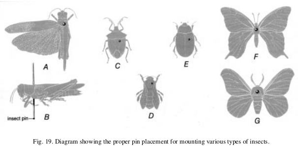
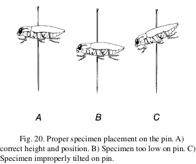
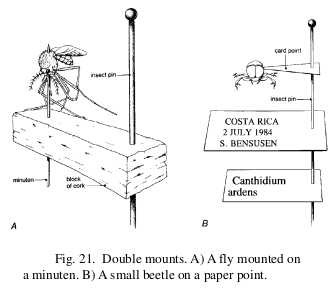

Lab 20-03
- Preparing images of insects for iNaturalist
- Printing pin labels containing data from iNaturalist
- Spreading wings of Lepidoptera
- Putting small Insects on paper points
References
- Peterson Insect Field Guide
- Insect Collection and Preserving Insects and Mites: Tools and Techniques
- Butterflies of Micronesia
- iNaturalist Insects of Micronesia project


